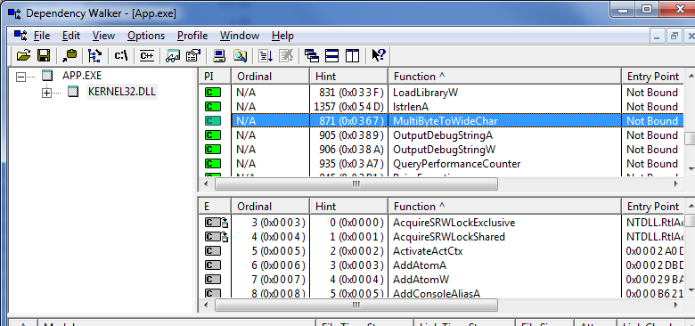

- Dependência pedindo carona
- Reunião de programadores C++ (há 5 anos)
- Esse ponteiro vai até onde?
- Atividades extracurriculares
# Dependência pedindo carona
Caloni, 2011-01-04 <computer> [up] [copy]Mesmo as vezes que você não queira, algumas dependências pedem carona e o compilador deixa entrar. Daí mesmo que você não use uma função API, ela acaba te atazanando a vida.
Foi o caso da ToolHelp32 no Windows NT 4.
Como as coisas funcionam
Quando compilamos, cada CPP vira uma coleção de funções que serão usadas, mais tarde, pelo linker, para juntar a bagunça. Para mais detalhes dessa fascinante história, recomendo o fantástico artigo sobre Os diferentes erros na linguagem C, seção **Linkedição**.
Para as dependências localizadas fora do executável final, por exemplo, as DLLs do sistema, o linker cria uma entrada no formato padrão de executável que adiciona essa dependência extra que será resolvida na hora do programa rodar, quando o loader do sistema operacional terá que fazer um linker on-the-fly, catando todas as DLLs e funções necessárias para colocar o bichinho no ar.
Dessa forma, quando existirem unresolved externals fora do executável final, o responsável por dar o erro é o loader do sistema:
Isso significa que o seu processo não poderá ser executado, pois faltam funções no ambiente que ele depende.
Um recurso muito útil para ver essas funções é o Dependency Walker, meu amigo de infância:
"Mas, Caloni, eu nem uso essa função! Como ela pode ser necessária?"
Pois é. As coisas nem sempre acabam sendo como o esperado. Se você possuir uma LIB, por exemplo, e nela existirem duas funções, como abaixo, e você se limitar a usar em seu programa apenas a primeira, todas as dependências da segunda também irão parar no executável final.
#include "LibMod.h"
#include <windows.h>
#include <Tlhelp32.h>
#include <stdio.h>
// Essa função é usada pelo nosso App
int UsingOldApis()
{
DWORD ver = GetVersion(); // API paleozoica, OK.
return int( (DWORD)(LOBYTE(LOWORD(ver))) );
}
// Essa função NÃO é usada pelo nosso App
void UsingNewApis()
{
// Opa: função moderninha!!
if( HANDLE snapshot = CreateToolhelp32Snapshot(TH32CS_SNAPPROCESS, NULL) )
{
PROCESSENTRY32 procEntry;
// Tudo bem, nosso App não vai usar essa função.
if( Process32First(snapshot, &procEntry) )
{
printf("Process list:\n");
do
{
printf("%s\n", procEntry.szExeFile);
}
while( Process32Next(snapshot, &procEntry) );
}
CloseHandle(snapshot);
}
}
#include "LibMod.h"
#include <stdio.h>
#include <stdlib.h>
int main()
{
// Usando apenas funções paleozoicas, certo?
printf("Our Major OS version is %d\n", UsingOldApis() );
system("pause");
}
Por que isso ocorre?
Acontece que o nosso amigo linker gera uma lista de dependências por módulo (CPP), e não por função. Dessa forma, tudo que vier é lucro.
Só que às vezes é prejuízo, também. Quando usamos um SO da época do guaraná com rolha, como o Windows NT 4, por exemplo, não conseguimos usar um programa porque este possuía uma função moderninha nunca usada, mas que estava dentro de um CPP junto de uma função comportada, usando apenas APIs documentadas no primeiro papiro da Microsoft.
Solução?
Sempre existe. Nesse caso, migrarmos as funções moderninhas para um segundo CPP, recompilarmos a LIB e a dependência milagrosamente desaparecerá!
#include "LibMod.h"
#include <windows.h>
#include <Tlhelp32.h>
#include <stdio.h>
// Essa função é usada pelo nosso App
int UsingOldApis()
{
DWORD ver = GetVersion(); // API paleozoica, OK.
return int( (DWORD)(LOBYTE(LOWORD(ver))) );
}
#include "LibMod.h"
#include <windows.h>
#include <Tlhelp32.h>
#include <stdio.h>
// Essa função NÃO é usada pelo nosso App
void UsingNewApis()
{
// Opa: função moderninha!!
if( HANDLE snapshot = CreateToolhelp32Snapshot(TH32CS_SNAPPROCESS, NULL) )
{
PROCESSENTRY32 procEntry;
// Tudo bem, nosso App não vai usar essa função.
if( Process32First(snapshot, &procEntry) )
{
printf("Process list:\n");
do
{
printf("%s\n", procEntry.szExeFile);
}
while( Process32Next(snapshot, &procEntry) );
}
CloseHandle(snapshot);
}
}

Agora a aplicação poderá rodar em paz naquele que é, como diz meu amigo, um sistema operacional de ponta... da outra ponta!
# Reunião de programadores C++ (há 5 anos)
Caloni, 2011-01-12 <ccppbr> [up] [copy]Começo de ano, hora de fazer backup completo. Durante minha cópia anual do gmail acabei encontrando meu post-chamado para nossa primeira reunião C++. Como parte da sessão nostalgia, convido-os, novos e velhos colegas, a continuar a brincadeira de organizar uma reunião informal de pessoas que gostam tanto de programar que criam seus próprios ponteiros.
E-mail escrito em 02/12/2005:
Um dia desses conversando com o Rodrigo Strauss, falando sobre como é interessante trocar informações e experiências sobre C++, ele teve a brilhante e original idéia (ninguém nunca fez isso antes) de propor encontros razoavelmente regulares para fazermos isso. A idéia dele era mais ou menos essa:
* Peridiocidade dos encontros de X em X meses. Ainda não fechamos isso;
* X pautas por reunião, votadas pelos participantes. Já temos algumas sugestões como, recursos arcanos do C++ (essa, de acordo com ele, seria minha função), ferramentas, bibliotecas, organização de código etc;
* Troca de experiências sobre C++ em diversos sistemas operacionais. Por exemplo, nós mostraríamos para o pessoal de UNIX o Visual C++ e aprenderíamos com eles sobre emacs ou KDevelop;
* Começar de forma muito simples, como uma mesa redonda, e se a coisa avançar, arrumar um lugar para palestras e apresentações;
* Reuniões em bares ou restaurantes onde possamos conversar, levar acompanhantes e nos sentirmos seguros levando notebooks ou Pockets. Podemos até subir uma rede wifi e aumentar a diversão :-)
* Como eu e o Strauss somos de São Paulo (na verdade, eu sou de São Bernardo), os primeiros encontros seriam na capital;
* Isso é uma boa desculpa para se encontrar e tomar um chopp || guaraná || cachaça.
Gostaríamos que as pessoas da comunidade C++ dessem sugestões sobre essa idéia. Estamos pensando em agendar o primeiro encontro para dia 17/12/2005 (sábado) durante a tarde, em um Outback (comida australiana, Shopping Center Norte ou Eldorado, tem infra para crianças e a comida é muito boa). Como pauta do primeiro encontro eu sugiro uma apresentação dos participantes (o que será desnecessário se só eu e o Strauss aparecermos) e uma discussão sobre o presente e o futuro do mercado de trabalho C++.
Coloquem as sugestões nos comentários e quando a gente fechar alguma coisa eu escrevo um novo post com o que definimos. Até lá.
PS: Qualquer semelhança deste post com o conteúdo de um conhecido blog brasileiro sobre programação não é mera coincidência.
# Esse ponteiro vai até onde?
Caloni, 2011-01-17 <computer> [up] [copy]Brincando com obtenções e conversões de SIDs, tive uma pequena dificuldade de usar a função ConvertStringSidToSid, de Sddl.h. Seu objetivo é receber uma string-SID no formato usado pela ferramenta PsGetSid e retornar uma sequência de bytes de tamanho arbitrário, que é o SID como o sistema o enxerga. Como ela retorna apenas o ponteiro final, do tipo PSID, o que parece fácil pode se tornar tricky se quisermos copiar o SID binário para algum buffer na pilha, já que não sabemos o número de bytes no buffer de origem. Tudo que sabemos é que, após o uso, devemos desalocar essa memória retornada pela API com outra API: LocalFree.
Ora, mesmo que não venhamos a escrever nessa memória de tamanho obscuro, não é de bom tom ler além da conta. Não há garantias que o que estiver após o SID é seguro. Pode até ser o final de uma página de memória, por exemplo, e o seu programa capota por causa de um singelo "Memory could not be read". Que coisa sem graça!

Sempre que me vejo com problemas desse tipo procuro informações primeiro no próprio MSDN, segundo na cabeça e terceiro no Google. Nesse caso em específico a cabeça deu um jeito, pois imaginei que houvesse alguma forma de pegar o tamanho da memória alocada através das funções Local (se a API precisa de LocalFree para desalocar sua memória, é óbvio que ela usou LocalAlloc para alocá-la, mesmo que não tenhamos o código-fonte para comprovar).
A partir de LocalHandle posso obter o HANDLE para a memória alocada localmente. Com esse handle a API me dá outra função, LocalSize, de onde posso obter o tamanho da memória previamente alocada através do seu handle. Isso é ótimo, pois em um primeiro momento pensei não haver saída, como nas funções de alocação em C e C++, por exemplo.
# Atividades extracurriculares
Caloni, 2011-01-18 [up] [copy]Essa é uma resposta a um simpático e-mail de um leitor, o Fabio, me perguntando sobre a tal da lógica (de programação?) e das atividades que um programador pode ter quando está longe do micro para não ficar com a "mente vadiando".
Entusiasta ao máximo, ele montou uma lista baseada em estudo constante sob variadas formas, mesmo longe do micro:
* Contar binário e calcular hexa na cabeça;
* Ler livros;
* Programar em papel;
* Algo mais?
De acordo com ele, o programador não consegue viver sem lógica, e quando tenta, se torna algo "intolerável".
Já fiz duas dessas coisas divertidíssimas em minha tenra idade: contar binário enquanto varria o laboratório onde trabalhava, programar em papel numa noite que fiquei ao relento por ter perdido o busão. Não faço mais essas coisas. Agora eu sou fresco. "Programo em UML".
Primeiro, de que lógica estamos falando? Existem diversas lógicas e existe a intuição, lado importante e muitas vezes renegado, mas presente no cinto de utilidades. É só saber usar. Seja um, seja outro.
Segundo, o cérebro pode cair na vadiagem. Aliás, ele deve. Sem vadiagem, nunca conseguimos processar aquelas threads que ficam rodando em idle, no inconsciente, e que podem resolver uma série de questões que ficam ensebando em nossos conturbados egos. É como o copo cheio de água em Karate Kid (ou em "2012").
O básico mesmo é ler livros. Tão básico que deve ser a atividade principal quando não estamos com nenhum eletrônico bonitinho na mão. Aliás, até quando estamos, com o auto-controle, conseguimos ler um ebook de vez em quando.
Independente do método empregado, nunca visualize seus esforços com ceticismo, e muito menos com o ceticismo dos outros. Se estiver funcionando, continue a fazê-lo. Não vê resultados? Mude o método. Senão cai na velha frase de Eistein sobre o sujeito que espera resultados diferentes fazendo sempre a mesma coisa: loucura.
O que eu adicionaria na lista?
* Assistir CSI. Pra entender o uso prático dos métodos indutivo e dedutivo de raciocínio; mais indutivo.
* Assistir House. Nunca é demais se imaginar como o médico-louco que cura todas as doenças esquisitas; doença aqui é bug.
* Assistir Dexter. Veja como ele faz o seu trabalho seguindo sempre o mesmo método e deixando o ambiente limpinho, sem nenhuma pista.
Fora isso, curta o que está fazendo. Isso é o primordial. Arrebenta com qualquer dúvida que tiver sobre estar no caminho certo.
[2010-12] [2011-02]